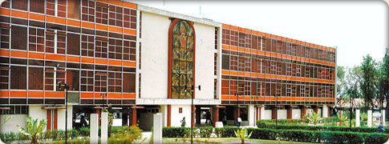

La Ingeniería Electrónica es una especialidad en ingeniería que trata los siguientes aspectos: detección, generación, transmisión, almacenamiento, conservación, representación de señales e información por medio de sistemas electrónicos. Un sistema electrónico es el conjunto lógico e inteligentemente organizado de componentes, dispositivos, partes, instrumentos y equipos específicos que están orientados hacia las nuevas tecnologías como la Mecatrónica, Inteligencia Artificial, Telecomunicaciones, Biomédicas, Informática, Automatización Industrial que sirven para satisfacer necesidades individuales y sociales con fines de comunicación
Formar profesionales con sólidos conocimientos en ciencias formales e ingenierías con una formación especializada en la detección, generación, transmisión, transformación, almacenamiento, conservación de señales por medio de sistemas electrónicos.